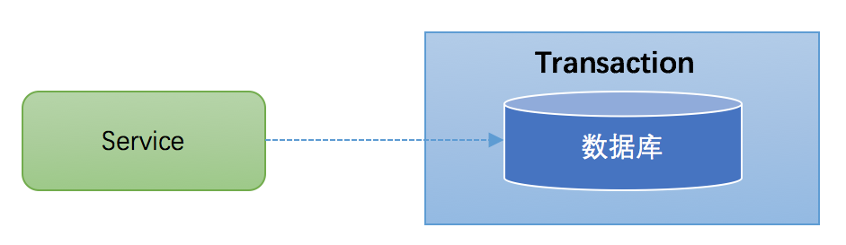

事务简介
事务(Transaction)是访问并可能更新数据库中各种数据项的一个程序执行单元(unit)。在关系数据库中，一个事务由一组SQL语句组成。事务应该具有4个属性：原子性、一致性、隔离性、持久性。这四个属性通常称为ACID特性。
- 原子性（atomicity）：一个事务是一个不可分割的工作单位，事务中包括的诸操作要么都做，要么都不做。
- 一致性（consistency）：事务必须是使数据库从一个一致性状态变到另一个一致性状态，事务的中间状态不能被观察到的。
- 隔离性（isolation）：一个事务的执行不能被其他事务干扰。即一个事务内部的操作及使用的数据对并发的其他事务是隔离的，并发执行的各个事务之间不能互相干扰。隔离性又分为四个级别：
- 读未提交(
read uncommitted)、 - 读已提交(
read committed，解决脏读)、 - 可重复读(
repeatable read，解决虚读)、 - 串行化(
serializable，解决幻读)。
- 读未提交(
- 持久性（durability）：持久性也称永久性（permanence），指一个事务一旦提交，它对数据库中数据的改变就应该是永久性的。接下来的其他操作或故障不应该对其有任何影响。
任何事务机制在实现时，都应该考虑事务的ACID特性，包括：本地事务、分布式事务，即使不能都很好的满足，也要考虑支持到什么程度。
本地事务
大多数场景下，我们的应用都只需要操作单一的数据库，这种情况下的事务称之为本地事务(Local Transaction)。本地事务的ACID特性是数据库直接提供支持。本地事务应用架构如下所示：

在JDBC编程中，我们通过java.sql.Connection对象来开启、关闭或者提交事务。代码如下所示：
1 | Connection conn = ... //获取数据库连接 |
分布式事务典型场景
当下互联网发展如火如荼，绝大部分公司都进行了数据库拆分和服务化(SOA)。在这种情况下，完成某一个业务功能可能需要横跨多个服务，操作多个数据库。这就涉及到了分布式事务，操作的资源位于多个资源服务器上，而应用需要保证对于多个资源服务器的数据的操作，要么全部成功，要么全部失败。本质上来说，分布式事务就是为了保证不同资源服务器的数据一致性。
典型的分布式事务场景
跨库事务
跨库事务指的是，一个应用某个功能需要操作多个库，不同的库中存储不同的业务数据。笔者见过一个相对比较复杂的业务，一个业务中同时操作了9个库。下图演示了一个服务同时操作2个库的情况：
分库分表
通常一个库数据量比较大或者预期未来的数据量比较大，都会进行水平拆分，也就是分库分表。如下图，将数据库B拆分成了2个库：
对于分库分表的情况，一般开发人员都会使用一些数据库中间件来降低sql操作的复杂性。如，对于sql
1 | insert into user(id,name) values (1,"张三"),(2,"李四")。 |
这条sql是操作单库的语法，单库情况下，可以保证事务的一致性。
但是由于现在进行了分库分表，开发人员希望将1号记录插入分库1，2号记录插入分库2。所以数据库中间件要将其改写为2条sql，分别插入两个不同的分库，此时要保证两个库要不都成功，要不都失败，因此基本上所有的数据库中间件都面临着分布式事务的问题。
服务化
微服务架构是目前一个比较一个比较火的概念。例如上面笔者提到的一个案例，某个应用同时操作了9个库，这样的应用业务逻辑必然非常复杂，对于开发人员是极大的挑战，应该拆分成不同的独立服务，以简化业务逻辑。拆分后，独立服务之间通过RPC框架来进行远程调用，实现彼此的通信。下图演示了一个3个服务之间彼此调用的架构：

Service A完成某个功能需要直接操作数据库，同时需要调用Service B和Service C，而Service B又同时操作了2个数据库，Service C也操作了一个库。需要保证这些跨服务的对多个数据库的操作要不都成功，要不都失败，实际上这可能是最典型的分布式事务场景。
小结：上述讨论的分布式事务场景中，无一例外的都直接或者间接的操作了多个数据库。如何保证事务的ACID特性，对于分布式事务实现方案而言，是非常大的挑战。同时，分布式事务实现方案还必须要考虑性能的问题，如果为了严格保证ACID特性，导致性能严重下降，那么对于一些要求快速响应的业务，是无法接受的。
X/Open DTP模型与XA规范
X/Open，即现在的open group，是一个独立的组织，主要负责制定各种行业技术标准。 就分布式事务处理(Distributed Transaction Processing,简称DTP)而言，X/Open主要提供了以下参考文档：
DTP模型
构成DTP模型的5个基本元素：
- 应用程序(Application Program ，简称AP)：用于定义事务边界(即定义事务的开始和结束)，并且在事务边界内对资源进行操作。
- 资源管理器(Resource Manager，简称RM)：如数据库、文件系统等，并提供访问资源的方式。
- 事务管理器(Transaction Manager ，简称TM)：负责分配事务唯一标识，监控事务的执行进度，并负责事务的提交、回滚等。
- 通信资源管理器(Communication Resource Manager，简称
CRM)：控制一个TM域(TM domain)内或者跨TM域的分布式应用之间的通信。 - 通信协议(Communication Protocol，简称
CP)：提供CRM提供的分布式应用节点之间的底层通信服务。
XA规范
在DTP本地模型实例中，由AP、RMs和TM组成，不需要其他元素。AP、RM和TM之间，彼此都需要进行交互，如下图所示：
这张图中(1)表示AP-RM的交互接口，(2)表示AP-TM的交互接口，(3)表示RM-TM的交互接口。
XA规范的最主要的作用是，就是定义了RM-TM的交互接口，XA规范除了定义的RM-TM交互的接口(XA Interface)之外，还对两阶段提交协议进行了优化。
两阶段协议(two-phase commit)是在OSI TP标准中提出的；在DTP参考模型(<<Distributed Transaction Processing: Reference Model>>)中，指定了全局事务的提交要使用two-phase commit协议；而XA规范(<< Distributed Transaction Processing: The XA Specification>>)只是定义了两阶段提交协议中需要使用到的接口，也就是上述提到的RM-TM交互的接口，因为两阶段提交过程中的参与方，只有TM和RMs。
两阶段提交协议(2PC)
两阶段提交协议（Two Phase Commit）不是在XA规范中提出，但是XA规范对其进行了优化。而从字面意思来理解，Two Phase Commit，就是将提交(commit)过程划分为2个阶段(Phase)：
阶段1：
TM通知各个RM准备提交它们的事务分支。如果RM判断自己进行的工作可以被提交，那就对工作内容进行持久化，再给TM肯定答复；要是发生了其他情况，那给TM的都是否定答复。在发送了否定答复并回滚了已经的工作后，RM就可以丢弃这个事务分支信息。
以mysql数据库为例，在第一阶段，事务管理器向所有涉及到的数据库服务器发出prepare”准备提交”请求，数据库收到请求后执行数据修改和日志记录等处理，处理完成后只是把事务的状态改成”可以提交”,然后把结果返回给事务管理器。
阶段2
TM根据阶段1各个RM prepare的结果，决定是提交还是回滚事务。如果所有的RM都prepare成功，那么TM通知所有的RM进行提交；如果有RM prepare失败的话，则TM通知所有RM回滚自己的事务分支。
以mysql数据库为例，如果第一阶段中所有数据库都prepare成功，那么事务管理器向数据库服务器发出”确认提交”请求，数据库服务器把事务的”可以提交”状态改为”提交完成”状态，然后返回应答。如果在第一阶段内有任何一个数据库的操作发生了错误，或者事务管理器收不到某个数据库的回应，则认为事务失败，回撤所有数据库的事务。数据库服务器收不到第二阶段的确认提交请求，也会把”可以提交”的事务回撤。
XA是资源层面的分布式事务，强一致性，在两阶段提交的整个过程中，一直会持有资源的锁。
TCC是业务层面的分布式事务，最终一致性，不会一直持有资源的锁。
存在的问题
二阶段提交看起来确实能够提供原子性的操作，但是不幸的是，二阶段提交还是有几个缺点的：
1、同步阻塞问题。
两阶段提交方案下全局事务的ACID特性，是依赖于RM的。一个全局事务内部包含了多个独立的事务分支，这一组事务分支要不都成功，要不都失败。各个事务分支的ACID特性共同构成了全局事务的ACID特性。也就是将单个事务分支的支持的ACID特性提升一个层次到分布式事务的范畴。 即使在本地事务中，如果对操作读很敏感，我们也需要将事务隔离级别设置为SERIALIZABLE。而对于分布式事务来说，更是如此，可重复读隔离级别不足以保证分布式事务一致性。如果我们使用MySQL来支持XA分布式事务的话，那么最好将事务隔离级别设置为SERIALIZABLE，然而SERIALIZABLE(串行化)是四个事务隔离级别中最高的一个级别，也是执行效率最低的一个级别。
2、单点故障。
由于协调者的重要性，一旦协调者TM发生故障，参与者RM会一直阻塞下去。尤其在第二阶段，协调者发生故障，那么所有的参与者还都处于锁定事务资源的状态中，而无法继续完成事务操作。（如果是协调者挂掉，可以重新选举一个协调者，但是无法解决因为协调者宕机导致的参与者处于阻塞状态的问题）
3、数据不一致。
在二阶段提交的阶段二中，当协调者向参与者发送commit请求之后，发生了局部网络异常或者在发送commit请求过程中协调者发生了故障，这会导致只有一部分参与者接受到了commit请求，而在这部分参与者接到commit请求之后就会执行commit操作，但是其他部分未接到commit请求的机器则无法执行事务提交。于是整个分布式系统便出现了数据不一致性的现象。
由于二阶段提交存在着诸如同步阻塞、单点问题等缺陷，所以，研究者们在二阶段提交的基础上做了改进，提出了三阶段提交。
三阶段提交协议(Three-phase commit)
三阶段提交（3PC)，是二阶段提交（2PC）的改进版本。
与两阶段提交不同的是，三阶段提交有两个改动点：
- 引入超时机制。同时在协调者和参与者中都引入超时机制。
- 在第一阶段和第二阶段中插入一个准备阶段。保证了在最后提交阶段之前各参与节点的状态是一致的。也就是说，除了引入超时机制之外，
3PC把2PC的准备阶段再次一分为二，这样三阶段提交就有CanCommit、PreCommit、DoCommit三个阶段。
CanCommit阶段
3PC的CanCommit阶段其实和2PC的准备阶段很像。协调者向参与者发送commit请求，参与者如果可以提交就返回Yes响应，否则返回No响应。
- 事务询问 协调者向参与者发送
CanCommit请求。询问是否可以执行事务提交操作。然后开始等待参与者的响应。 - 响应反馈 参与者接到
CanCommit请求之后，正常情况下，如果其自身认为可以顺利执行事务，则返回Yes响应，并进入预备状态。否则反馈No
PreCommit阶段
协调者根据参与者的反应情况来决定是否可以记性事务的PreCommit操作。根据响应情况，有以下两种可能。
假如协调者从所有的参与者获得的反馈都是Yes响应，那么就会执行事务的预执行。
- 发送预提交请求 协调者向参与者发送
PreCommit请求，并进入Prepared阶段。 - 事务预提交 参与者接收到
PreCommit请求后，会执行事务操作，并将undo和redo信息记录到事务日志中。 - 响应反馈 如果参与者成功的执行了事务操作，则返回
ACK响应，同时开始等待最终指令。
假如有任何一个参与者向协调者发送了No响应，或者等待超时之后，协调者都没有接到参与者的响应，那么就执行事务的中断。
- 发送中断请求 协调者向所有参与者发送abort请求。
- 中断事务 参与者收到来自协调者的abort请求之后（或超时之后，仍未收到协调者的请求），执行事务的中断。
doCommit阶段
该阶段进行真正的事务提交，也可以分为以下两种情况。
Case 1：执行提交
- 发送提交请求 协调接收到参与者发送的
ACK响应，那么他将从预提交状态进入到提交状态。并向所有参与者发送doCommit请求。 - 事务提交 参与者接收到
doCommit请求之后，执行正式的事务提交。并在完成事务提交之后释放所有事务资源。 - 响应反馈 事务提交完之后，向协调者发送
ACK响应。 - 完成事务 协调者接收到所有参与者的
ACK响应之后，完成事务。
Case 2：中断事务
协调者没有接收到参与者发送的ACK响应（可能是接受者发送的不是ACK响应，也可能响应超时），那么就会执行中断事务。
- 发送中断请求 协调者向所有参与者发送abort请求
- 事务回滚 参与者接收到abort请求之后，利用其在阶段二记录的undo信息来执行事务的回滚操作，并在完成回滚之后释放所有的事务资源。
- 反馈结果 参与者完成事务回滚之后，向协调者发送
ACK消息 - 中断事务 协调者接收到参与者反馈的
ACK消息之后，执行事务的中断。
在doCommit阶段，如果参与者无法及时接收到来自协调者的doCommit或者rebort请求时，会在等待超时之后，会继续进行事务的提交。（其实这个应该是基于概率来决定的，当进入第三阶段时，说明参与者在第二阶段已经收到了PreCommit请求，那么协调者产生PreCommit请求的前提条件是他在第二阶段开始之前，收到所有参与者的CanCommit响应都是Yes。（一旦参与者收到了PreCommit，意味他知道大家其实都同意修改了）所以，一句话概括就是，当进入第三阶段时，由于网络超时等原因，虽然参与者没有收到commit或者abort响应，但是他有理由相信：成功提交的几率很大。 ）
2PC与3PC的区别
相对于2PC，3PC主要解决的单点故障问题，并减少阻塞，因为一旦参与者无法及时收到来自协调者的信息之后，他会默认执行commit。而不会一直持有事务资源并处于阻塞状态。但是这种机制也会导致数据一致性问题，因为，由于网络原因，协调者发送的abort响应没有及时被参与者接收到，那么参与者在等待超时之后执行了commit操作。这样就和其他接到abort命令并执行回滚的参与者之间存在数据不一致的情况。
了解了2PC和3PC之后，我们可以发现，无论是二阶段提交还是三阶段提交都无法彻底解决分布式的一致性问题。

...
...
Copyright 2021 sunfy.top ALL Rights Reserved